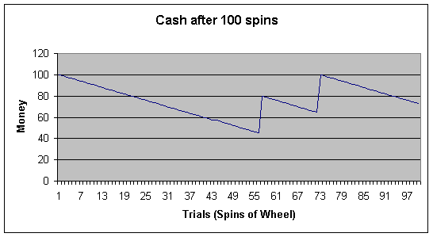
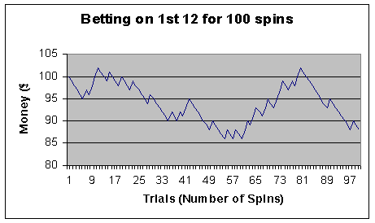
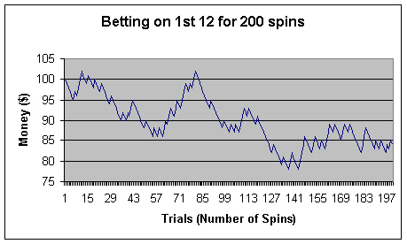

The aim of this project is to
prove that Roulette is not a worthwhile game to play. People claim to have
discovered the ultimate Roulette strategy but I believe that there aren’t any.
Roulette is a game usually
played at casinos with any amount of players. The players make bets on outcomes
of a spinning wheel and get paid based on the likeliness of there bet. The
Roulette betting table has 37 numbers on it ranging from 0 to 36 and offers
many ways of betting on a certain outcome. After the player or players have
finished betting, the banker, (the person running the game, a casino employee
if played at the casino) will spin the wheel with 37 numbered compartments on
it, and throw a small ball onto the table which will settle in one of the
compartments. If I bet $1 on the number 30 and the ball land in 25, I have lost
my dollar. If the ball did land in 30 I would get 36 times my bet which was a
dollar. So I would have made 35 dollars.
The laws of chance in a game
of Roulette state that every time you spin the wheel, there is an equal chance
of the ball landing on any number. There is a 1 in 37 chance of the ball
landing on any particular number. It is also the case that the amount of times
the ball will land on any particular number will roughly even out.
You can do the same thing
with a coin. You flip it 100 times and it will come up heads a similar number
of times as tails. Flip it 1000 times and the difference between heads and
tails will become closer. Flip it 1,000,000 times and they will be very close.
Here is a list of all the
bets and what they pay.
Straight bet – You bet on a
number from 0 to 36. If you pick the right number, you win the bet. Pays 36/1. 1/37 chance of winning.
Pays 18/1. 2/37 chance of winning.
Street bet – You bet on a row
of 3 numbers. If one of those 3 numbers are correct,
you win the bet. 0 is not part of any row.
Pays 12/1. 3/37 chance of winning.
Line bet – You bet on two
adjacent rows If one of the numbers from either two of
those rows are correct, you win the bet. 0 is not part of any row.
Pays 5/1. 6/37 chance of winning.
Corner bet – You bet on 4
numbers which are all packed in together to form a square. If 1 of those 4
numbers are correct, you win the bet. 0 can not be
part of your corner bet.
Pays 8/1. 4/37 chance of winning.
Column bet – You are betting
on a whole column of numbers. There are only 3 columns and 0 is not included in
either column so you cannot bet on it using a column bet. If a number is
correct from your column, you win the bet.
Pays 3/1. 12/37 chance of winning.
Dozen bet – The numbers from
1 to 36 (0 is not included) are divided into 3 groups. In the dozen bet, you
bet on one of those groups. If a number that is in the group you selected is
correct, you win the bet.
Pays 3/1. 12/37chance of winning.
Half bet - The numbers from 1
to 36 (0 is not included) are divided into 2 groups. In the half bet, you bet
on one of those groups. If a number that is in the group you selected is
correct, you win the bet.
Pays 2 /1. 18/37 chance of winning.
Even bet – You are betting on
either all the odd or all the even numbers on the table (0 is considered not to
be odd or even.) If you picked weather the correct number was odd or even
correctly, you win the bet.
Pays 2/1. 18/37 chance of winning.
Colour bet – Each number on
the Roulette table has a colour, red or black (0 is green) You
can bet on the correct number being either red or black. If you are correct,
you win the bet.
Pays 2/1. 18/37 chance of winning.
There is a picture of all
these bets in the Roulette game. Click the “Help on making a bet” button.
I bet $1, I win, my bet pays 12
– 1 so I get 12 dollars. I started with 1 dollar so I have made 11 dollars.
Notice that the chance of
winning for every bet is less than the payout for that bet? What that means is
that by playing Roulette a lot, the laws of chance say that you will lose
money. Its just like flipping a coin 100 times except
that with the coin, you have an even chance while with a game of Roulette you
don’t. Here is a formula for the expected winnings in a game of Roulette.
The probability is
written as 1/37 which is the same as saying 1 divided by 37. The “left
number” (1) is how many you will get right in the “right number” (37), so
you have a 1 in 37 chance of success if playing a straight bet.
n = number that the ball
lands in
Expected winnings of n = Pr(
n ) x Payout( n )
(Pr means, probability of)
Eg.
Expected-winnings of 7 = 1/37
x 36/1
= 0.972
If you multiply this answer
by your bet, you will see that the final payout is less than your bet.
Using my Roulette game I
played for 100 spins, stating with $100, betting on a single number each time.

In the end I only had $73.
If I were to walk into a
casino, place a straight bet and win straight away then I would end up making money
but there is a 1/37 chance of getting the right number so that is unlikely. On
average, you will lose more money trying to get the right number than you will
win when you get it.
You can use the
expected-winnings rule on any type of bet. The following example shows a bet on
Red
Expected-winnings of Red =
18/37 x 2/1
= 0.972
The answer is the same as for
a single-number bet. The expected winnings are just under 1.
Here are some more examples
of the expected winnings formula.
The expected winnings of
betting on 1 and 7 and 32 at the same time
= (1/37 x 36/1) + (1/37 x
36/1) + (1/37 x 36/1)
=
2.918
This answer is 3 times the
answer for just 1 number. You receive less than the $3 you bet.
The expected winnings of
betting on Even, 23 and 45
= (18/37 x 2/1) + (1/37 x
36/1) + (1/37 x 36/1)
= 2.918
This answer is the same as
the one above it because an Even bet and a number bet both have expected
winnings of 0.972. Every, “single” bet in Roulette has the expected winnings of
0.972 (Multiplied by the bet). In the above two questions, I am just adding 3
single bets together. 1 - 0.972 = 0.028 (Multiplied by your bet) losses for
each spin. If I play for 100 spins and bet a dollar each time, I will on
average lose $2.80. That’s 0.028 x 100.
With all the stuff I have
done so far, I can see that whatever your strategy, you will on average still
lose money. You could of course get “lucky” on the first spin, make some money
and leave but that won’t happen often enough to be useful.
The following graphs show
that you will lose money at roulette whether you play for a short or a long
time.

The graph
on the left shows betting $1 on the 1st 12 for 100 spins. The Graph on the right shows the same but I played
for an extra 100 spins. After the first 100 spins, I had lost $3. According to
chance, I should have lost $2.80 on average after 100 spins so $3 is very
close. After 200 spins I should have lost $5.60. I lost $6 which is very close
too.
Only betting for 200 spins,
my losses won’t be very exact. If I were to play for 1,000,000 spins, my losses
would be very on target.
If I were playing with only
$100, I would run out of money before 1,000,000 spins. I can work out how long
I would last.
If I am meant to lose 0.028
cents every spin, then I can say:
100/0.028 = 3653.428 spins.
So, with $100, betting $1
each spin, I would, according to chance, last 3653 spins before running out of
money.
Roulette Project and Roulette Game by Thomas Wadley 8E for the Maths
Talent Quest.